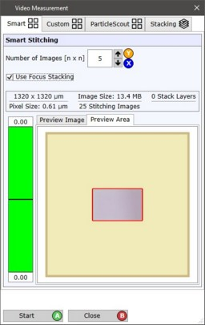
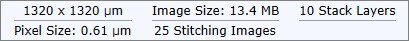
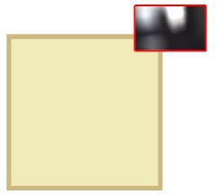
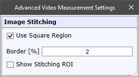

|
Video Measurement Overview
|
视频测量对话框可用于执行图像拼接和聚焦堆栈。

智能拼接
See 智能拼接.
自定义拼接
See 自定义拼接.
ParticleScout拼接
See ParticleScout拼接.
Scan Table 拼接
对于使用扫描台且没有任何样品定位设备的系统，可以使用扫描台拼接。
它仅使用扫描台的总范围进行拼接。
视频聚焦堆栈
See 视频聚焦堆栈.
Common 拼接 用户界面
拼接信息

您可以在此查看当前拼接信息：
预览
预览图像
视频测量过程中，此选项卡将显示预览图像。
您可以使用鼠标滚轮放大图像，使用鼠标中键平移图像。
导出高质量
将拼接图像以更高分辨率导出到当前项目。
原始分辨率是使用物镜和相机参数计算的最佳分辨率，最大为 6400 万像素。
为防止项目过大，导出的标准分辨率约为 1 百万像素。
预览 面积

您可以在此查看当前视频区域和预览拼接区域，在绝对横向空间中定位。
这为您提供了拼接图像位置/尺寸与当前位置和视频图像尺寸之间关系的概述。
开始 / 取消 / 关闭
开始
启动当前选定的视频测量，取决于所选选项卡。
取消
取消当前的视频测量。预览视频图像始终导出到当前项目（ParticleScout拼接除外）
关闭
关闭窗口。
高级 选项

使用正方形区域
如果勾选，将使用正方形区域。影响 智能拼接的尺寸。
边框 [%]
定义单个拼接图像使用完整视频图像的比例。
例如：视频宽度 = 1000像素，边框 = 10% -> 最左侧100像素和最右侧100像素不使用。
显示拼接 ROI
如果勾选，单个拼接图像的区域将显示在视频图像中。